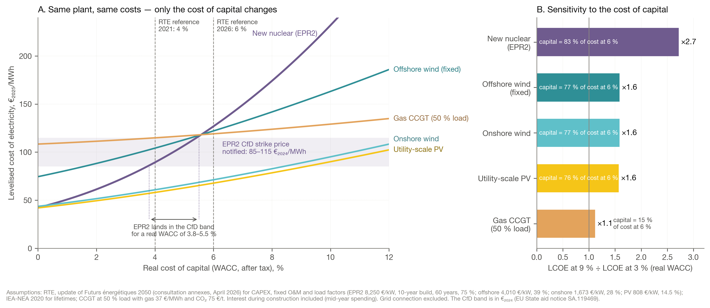

Financer la transition : qui paie, à quel taux, pourquoi (note, 29/09/2026) + classeur LCOE vs coût du capital
70 faits sourcés (FIN-01 à 70), I4CE, RTE 2026, BCE ; une figure du LCOE (coût moyen actualisé du MWh) de cinq filières selon le coût moyen pondéré du capital (CMPC, de 0 à 12 %) ; un classeur élèves (LCOE_cout_du_capital.xlsx, 4 onglets, formules, testé contre le script de calcul de la note).
Cette note est le compagnon du thème
Economie/Financement_transition, ouvert le 29/09/2026 pour
le projet d’approfondissement du PESTO 2026 « financement de la
transition, côté producteur et côté consommateur ». Elle s’appuie sur
une table de 70 faits sourcés et paginés
(data/faits_financement.md, identifiants FIN-xx), 35
documents publics archivés dans bibliographie/ (I4CE, Cour
des comptes, CRE, RTE, notification EPR2 à Bruxelles, textes européens),
une recherche d’articles académiques avec Scanlitt
(bibliographie/scanlitt_2026-09-29.md) et un outil
construit pour le projet, le classeur
output/LCOE_cout_du_capital.xlsx (coût
complet de cinq filières en fonction du coût du capital, et montage
EPR2). Elle complète le thème voisin
Economie/Investissement_transition, qui donne les volumes
mondiaux (BNEF, AIE).
1. En cinq phrases
- Il faudrait presque doubler l’effort : la France a investi 102 Md€ pour le climat en 2024 (−5 %) ; il faudrait ≈ +87 Md€ par an en 2030 (I4CE), ≈ +66 Md€ par rapport à un monde sans transition (Pisani-Ferry–Mahfouz) ; l’UE investit 534 Md€ pour 878 Md€ nécessaires (FIN-01, 04 à 06).
- C’est d’abord le privé qui paie : ménages et entreprises portent 76 Md€ sur 102 ; le budget public finance 16 Md€, 35 Md€ en comptant les certificats d’économies d’énergie, les banques publiques et les gestionnaires d’infrastructures (FIN-10 à 13).
- Le taux compte autant que le devis : l’EPR2 coûte ≈ 40, 60 ou 100 €2020/MWh selon que le capital coûte 1, 4 ou 7 % (Cour des comptes, devis de 2022) ; passer de 3 % à 9 % multiplie le coût complet par 2,7 pour le nucléaire, 1,6 pour l’éolien et le solaire, 1,1 pour le gaz (FIN-32, calcul de ce thème).
- C’est le cadre de régulation qui fait le taux : la CRE estime le risque (bêta) d’un nucléaire régulé à 0,50 et d’un nucléaire vendu au marché à 0,90 ; un contrat pour différence baisse de 3,7 à 5 points le coût du capital de l’éolien en mer. D’où le montage de l’EPR2 : prêt public à 0 % pendant le chantier, contrat pour différence de 40 ans, État qui paie 90 % des dérives entre 15 et 30 Md€ (FIN-25, 27 à 30, 58).
- La contrainte budgétaire est réelle, mais elle porte surtout sur la manière de payer : dette à 115,7 % du PIB, charge d’intérêts de 64,7 Md€ (plus du double des 26 Md€ que l’État consacre aux investissements climat), OAT à 4 % ; les leviers qui ne coûtent pas au budget passent par le contrat (CfD), la garantie, l’épargne réglementée et les factures (FIN-14, 20, 47, 48).
2. Combien
| Montant | Source | |
|---|---|---|
| Investissements climat, France 2024 | 102,2 Md€ (107,7 en 2023) | I4CE 2025, p. 3 |
| … dont construction et rénovation | 41,8 Md€ | I4CE 2025, p. 26 |
| … dont transports (report modal, véhicules bas carbone) | 34,5 Md€ | idem |
| … dont énergie (EnR et réseaux de chaleur, nucléaire, réseaux électriques) | 24,3 Md€ | idem |
| Investissements « fossiles », France 2024 | 71,1 Md€ (dont > 40 de voitures thermiques) | I4CE 2025, p. 34 |
| Besoin supplémentaire en 2030 (SNBC 3) | ≈ +87 Md€/an | I4CE 2025, p. 36 |
| Supplément « net » (climat − fossile), 2030 | ≈ 66 Md€/an (2,3 pts de PIB) | France Stratégie 2023, p. 79 |
| UE 2025 : investi / nécessaire | 534 / 878 Md€ | I4CE Europe 2026, p. 4-5 |
| Draghi : investissement additionnel UE (climat, numérique, défense) | 750-800 Md€/an | Draghi 2024, partie A, p. 65 |
Piège : ces chiffres ne s’additionnent pas et ne se comparent qu’à périmètre égal — besoin brut, besoin additionnel et écart sont trois choses (FIN-09). À périmètre identique, I4CE et Pisani-Ferry convergent vers ≈ 80 Md€ (FIN-05).
3. Qui finance
| Par source du financement (France 2024) | Md€ | Par porteur du projet | Md€ |
|---|---|---|---|
| Fonds propres des ménages et des entreprises | 39,7 | Ménages | 38,4 |
| Banques commerciales et marchés | 41,5 | Entreprises | 38,0 |
| Administrations publiques (budget) | 16,3 | Bailleurs sociaux, gestionnaires d’infrastructures | 20,4 |
| Institutions financières publiques (CDC, Bpifrance) | 4,7 | État et collectivités pour compte propre | 5,4 |
Source : I4CE 2025, p. 28-29 (FIN-10, 11). Par instrument : autofinancement 38,8, prêts commerciaux 28,4, obligations 12,5, subventions 12,4, prêts concessionnels 5,2, CEE 4,9 Md€ (FIN-12).
- Ce que la photo ne montre pas : les soutiens payés pendant l’exploitation — obligation d’achat et complément de rémunération des renouvelables (CSPE), tarif de réseau (TURPE), futurs contrats pour différence. C’est pourtant par eux que passe l’essentiel du soutien à l’électricité (FIN-10, 13).
- Les renouvelables : 11,6 Md€ investis en 2024, financés à ≈ 80 % par de la dette… parce qu’un contrat de l’État garantit le revenu (FIN-17).
- Les réseaux : RTE passe de 2,1 Md€ investis en 2023 à 4,9 Md€ par an prévus en 2025-2028, Enedis de 4,9 à 6,4 Md€ ; payés par le TURPE, hors budget (FIN-18).
- Les banques publiques : groupe CDC 28 Md€ d’engagements « transition » en 2024 ; le fonds d’épargne transforme le livret A et le LDDS (1,7 %) en prêts longs — c’est lui qui prêtera à l’EPR2 ; Bpifrance 1,3 Md€ pour les EnR ; la BEI (57 Md€ de financements verts en 2025 dans l’UE) (FIN-16, 22, 65).
- L’État et les collectivités : l’État dépense 26,4 Md€ pour les investissements climat (2024) mais recule en 2025 (véhicules, report modal) ; les collectivités investissent ≈ 10 Md€ par an et devraient doubler (+11 Md€/an), soit 40 à 100 Md€ de dette en plus d’ici 2030 (FIN-14, 15, 51).
4. À quel taux

| CMPC réel | EPR2 | Éolien en mer | Éolien terrestre | PV au sol | CCG gaz (50 %) |
|---|---|---|---|---|---|
| 2 % | 61 | 88 | 52 | 49 | 111 |
| 4 % | 89 | 104 | 61 | 58 | 115 |
| 6 % (référence RTE 2026) | 127 | 122 | 71 | 68 | 119 |
| 8 % | 174 | 142 | 83 | 79 | 124 |
€2025/MWh, hypothèses RTE (avril 2026) :
data/lcoe_vs_cmpc.csv (calcul de ce thème,
lcoe.py). Raccordement et coûts système exclus : le LCOE
compare des coûts, pas des valeurs (un MWh solaire de midi ne vaut pas
un MWh de janvier, voir le groupe marchés).
Les taux observés (attention : nominal ou réel, avant ou après impôt) :
| Taux | Valeur | Nature | Source |
|---|---|---|---|
| OAT 10 ans (État) | 0,01 % (2021) → 3,37 % (2025) → 4,00 % (août 2026) | nominal, marché | BCE (FIN-20) |
| Taux de dépôt de la BCE | 2,50 % (sept. 2026, relevé deux fois en 2026) | nominal | BCE (FIN-21) |
| Livret A (ressource du fonds d’épargne) | 1,7 % | nominal, réglementé | service-public.fr (FIN-22) |
| Réseau de transport (TURPE 7) | 5,0 % | nominal avant IS | CRE 2025-77 (FIN-23) |
| Nucléaire historique vendu au marché | 9,1 % (EDF demandait 11,3 %) | nominal avant IS | CRE, sept. 2025 (FIN-24) |
| Renouvelables Europe de l’Ouest, 2019-2021 | 3,3 à 4,2 % | nominal après IS | IRENA 2023 (FIN-36, 37) |
| Référence RTE pour comparer les mix | 4 % (2021) → 6 % (2026), fourchette 2-10 % | réel après IS | RTE (FIN-39) |
Pourquoi le taux dépend du cadre et pas seulement de la technologie : la CRE estime le bêta de l’actif à 0,37 pour un réseau, 0,50 pour un renouvelable ou un nucléaire régulé, 0,90 pour un nucléaire marchand (FIN-25). Selon la Commission, un CfD bidirectionnel baisse de 3,7 à 5 points le coût du capital de l’éolien en mer (FIN-58). C’est le pont avec le groupe marchés : le design du marché fixe le risque, le risque fixe le taux, le taux fixe le coût.
5. Le nucléaire, cas d’école
- Le programme : six EPR2 (9 990 MW), 72,8 Md€2020 (devis EDF de novembre 2024, hors intérêts intercalaires) ; le devis était de 51,7 Md€2020 en 2022 et de 67,4 en 2023 ; mises en service 2038-2044 (FIN-26).
- Le montage notifié à Bruxelles (JO C/2026/2619) :
- prêt public couvrant 60 % de la construction (≈ 44 Md€2020), à 0 % pendant le chantier puis 3 %, sur 39 ans, ressource du fonds d’épargne de la CDC avec la garantie de l’État ;
- EDF apporte 40 % (prêt d’actionnaire), rentabilité visée 6,5 à 8,5 % nominale après impôt ; sans aide, 1 à 3 % : c’est la défaillance de marché invoquée ;
- contrat pour différence de 40 ans, prix d’exercice 85 à 115 €2024/MWh ;
- dérives de coût : EDF seule jusqu’à 15 Md€, puis 90 % pour l’État entre 15 et 30 Md€, rien de prévu au-delà (FIN-27 à 30).
- Bruxelles a ouvert une enquête approfondie le 31/03/2026 ; décision finale d’investissement visée fin 2026 (FIN-31).
- Les contre-exemples : Flamanville 3, 23,7 Md€2023 au total dont ≈ 4 Md€ d’intérêts intercalaires, ne rapporte pas son coût du capital (FIN-33) ; Hinkley Point C, financé par du capital privé à ≈ 9 % : prix d’exercice 92,50 £2012/MWh sur 35 ans et ≈ 30 Md£ de compléments ; selon le NAO, avec un financement public à 2 %, le coût de construction aurait pu dériver de 400 à 600 % avant d’égaler le coût du contrat (FIN-34). Sizewell C a choisi la base d’actifs régulée : les consommateurs paient dès le chantier (FIN-35, secondaire).
Ce que donne l’outil (onglet « Montage EPR2 », hypothèses RTE, 2 % d’inflation) : coût du capital réel ≈ 1 % pendant le chantier et ≈ 2,75 % en exploitation, soit un coût complet de ≈ 66 €/MWh, contre ≈ 148 €/MWh si tout était financé au taux du nucléaire marchand (9,1 % nominal) et ≈ 61 €/MWh au taux de l’OAT. Le prix d’exercice notifié (85-115) est au-dessus : l’écart est une bonne question (impôt sur les sociétés, durée du CfD plus courte que la vie de l’installation, marges pour aléas, devis différent de celui de RTE, coût de la garantie de l’État). Le calcul est volontairement simple : il ne tient compte ni des dérives, ni des retards, ni de l’impôt.
6. Pourquoi de l’argent public, et avec quelle efficacité
- Les raisons classiques : externalité carbone mal tarifée (composante carbone figée à 44,6 €/t, marché carbone des bâtiments et des transports reporté à 2028), risques que le privé ne sait pas porter (dérives de chantier, prix à 40 ans), barrières d’accès au crédit (FIN-53, 54).
- La rénovation est rentable pour la collectivité sur 55 % du parc, pour le propriétaire sur 5 % seulement : c’est l’argument de la subvention (CAE 2024, FIN-40).
- L’efficacité en question : les CEE coûtent ≈ 6 Md€ par an aux consommateurs, avec des économies surestimées d’au moins 30 % et ≈ 20 % d’effet d’aubaine (Cour des comptes 2024) ; MaPrimeRénov’ est bien ciblée sur les ménages modestes, mais à 73 % mono-geste (FIN-41, 42). Une part publique observée n’est pas un effet de levier : mesurer l’additionnalité demande un contrefactuel (FIN-45).
- Le soutien aux renouvelables fonctionne comme un contrat pour différence : il a rapporté à l’État pendant la crise (5,5 Md€ réalisés sur 2022-2023, loin des 30,9 prévus en 2022), puis recoûte quand les prix baissent : charges de service public 11,5 Md€ en 2025, 14,2 Md€ prévus pour 2027 (FIN-43, 44).
7. Les difficultés
- Finances publiques : dette 3 460 Md€ (115,7 % du PIB) fin 2025, déficit 5,1 %, procédure pour déficit excessif ; charge d’intérêts 64,7 Md€ (+11 %) ; la transition ajouterait 25 à 34 Md€ de dépenses publiques par an en 2030 et jusqu’à 25 points de PIB de dette en 2040 (Pisani-Ferry) (FIN-47 à 49).
- Les taux : l’OAT a pris 4 points depuis 2021 et la BCE a remonté ses taux en 2026 (conflit au Moyen-Orient) ; la hausse des taux a d’abord cassé le bâtiment (FIN-20, 21, 52).
- L’argent européen se raréfie : la Facilité pour la reprise s’arrête en 2026 et son remboursement commence en 2028 (≈ 30 Md€/an pour l’UE) ; les réseaux de distribution sous-investissent de 24 Md€ par an (FIN-56).
- Les projets d’hydrogène perdent leurs lauréats : à la 2ᵉ enchère de la Banque européenne de l’hydrogène, 271 M€ signés sur 992 M€ attribués (FIN-55).
8. Les leviers
| Levier | Ce qu’il fait | Exemple chiffré |
|---|---|---|
| Contrat pour différence bidirectionnel | garantit un prix, reprend le surplus : baisse le coût du capital | obligatoire pour tout soutien public nouveau dès le 17/07/2027 ; −3,7 à −5 points (éolien en mer) |
| Prêt public ou garantie | transfère au public le risque et son taux | EPR2 : 60 % à 0 %/3 % (fonds d’épargne) |
| Épargne réglementée | ressource longue et peu chère | livret A à 1,7 % → fonds d’épargne de la CDC |
| Banque publique européenne | dette levée au taux d’un quasi-souverain | BEI : 57 Md€ verts en 2025 |
| Recettes du marché carbone | financent sans prélever sur le budget général | UE 38,8 Md€ en 2024, France 1,53 Md€ ; Fonds social pour le climat : 7,3 Md€ au plus pour la France |
| Prime par kilo d’hydrogène | comble l’écart de coût | Banque européenne : 0,20 à 3,49 €/kg ; France : 778 M€ sur 15 ans pour 161 MW |
| Contrat carbone pour différence | paie la tonne évitée dans l’industrie | Allemagne, 2ᵉ tour ≈ 5,5 Md$ |
| Obligations vertes | fléchent la dette | NextGenerationEU : jusqu’à 30 % en obligations vertes |
Sources : FIN-57 à 67. Selon le rapport Draghi, pour que le privé finance seul sans incitation budgétaire, il faudrait baisser son coût du capital d’environ 250 points de base : d’où les incitations publiques (FIN-59).
9. Liens avec les deux autres projets
- Hydrogène : dans le coût du kilo d’hydrogène français, l’électricité et les réseaux pèsent ≈ 70 %, l’électrolyseur ≈ 10 % (RTE) ; le coût du capital de l’électricité bas carbone se retrouve donc dans le prix de l’hydrogène. La Chine produit un hydrogène renouvelable 40 à 45 % moins cher, en partie parce que son coût du capital est environ moitié du coût américain ou espagnol (FIN-68, 69).
- Marchés : le gaz fixe le prix marginal ; un actif bas carbone vendu au marché porte ce risque et se finance cher ; un contrat long le découple et baisse son taux (FIN-25, 58, 70). Le cours PESTO-3 le résume : nucléaire et renouvelables doivent se financer par une sécurisation de l’achat, un soutien au financement, la maîtrise des temps de construction et une certaine exposition au marché de court terme.
10. Questions à creuser (avec le classeur)
- À quel coût du capital l’EPR2 atteint-il 100 €/MWh ? L’éolien en mer ? Qui emprunte à ce taux, et qui porte le risque ?
- Le montage EPR2 : que devient le coût complet si le chantier dure 15 ans, si le prêt public couvre 80 %, si EDF vise 10 % ? L’écart avec le prix d’exercice du CfD (85-115 €/MWh) : d’où vient-il ?
- Qui paie in fine : contribuable (prêt, garantie), consommateur (CfD, CSPE, TURPE, CEE), épargnant (livret A), actionnaire ? Faire le tableau pour l’EPR2, l’éolien en mer et un électrolyseur aidé.
- Dette publique : l’investissement public climat doit-il sortir des règles budgétaires (« règle d’or verte ») ? Arguments et contre-arguments (Draghi, Pisani-Ferry, Cour des comptes).
- Effet d’aubaine : comment mesurer l’additionnalité d’une aide (CEE, MaPrimeRénov’, mécanisme de soutien à l’hydrogène) ? Rencontre avec I4CE le 30/09 : leurs méthodes.
11. Pièges
- Nominal ≠ réel, avant impôt ≠ après impôt : réel = (1 + nominal) / (1 + inflation) − 1. Les taux de la CRE (5,0 %, 9,1 %) sont nominaux avant impôt ; ceux de RTE réels après impôt.
- Euros courants ≠ euros constants (et de quelle année : €2020, €2024, €2025).
- Investissement ≠ financement ≠ soutien d’exploitation ; flux annuel ≠ cumul.
- Périmètres : I4CE ≠ budget vert (40,5 Md€ « favorables ») ≠ comptabilité nationale ; besoin brut ≠ additionnel ≠ écart.
- Prévision ≠ réalisé (les recettes EnR 2022-2023 : 30,9 prévus, 5,5 réalisés).
- Part publique ≠ effet de levier.
12. Reproduire
python3 plot_cout_capital.py # figure + data/lcoe_vs_cmpc.csv
python3 construire_outil_excel.py # output/LCOE_cout_du_capital.xlsx
python3 test_outil_excel.py # le classeur (recalculé par LibreOffice) = lcoe.py ?13. Sources principales
- I4CE (juillet 2025), Panorama des financements climat, édition 2025, et ses annexes (xlsx) ; I4CE (juin 2026), The State of Europe’s Climate Investment ; I4CE et La Banque Postale (2024), panorama des collectivités.
- France Stratégie (2023), Les incidences économiques de l’action pour le climat (Pisani-Ferry, Mahfouz).
- Commission européenne (2026), aide d’État SA.119469, JO C/2026/2619 (EPR2) ; orientations sur les CfD bidirectionnels, JO C/2025/6701 ; règlement 2024/1747.
- Cour des comptes, La filière EPR (janvier 2025) ; Les certificats d’économies d’énergie (2024).
- CRE, coûts complets du nucléaire historique 2026-2028 (sept. 2025) ; TURPE 7 (délibérations 2025-77 et 2025-78) ; CSPE 2026-2027 (délibération 2026-149).
- RTE, Futurs énergétiques 2050, chapitre 11 (2022) ; actualisation, consultation (avril 2026), § 8.1.3 et annexes.
- NAO (2017), Hinkley Point C ; BEI, Investment Report 2025/2026, chapitre 6 ; Draghi (2024), partie A.
- Littérature académique
(
bibliographie/scanlitt_2026-09-29.md) : Steffen 2020 (coût du capital des renouvelables) ; Weibezahn et Steigerwald 2024 (financer le nucléaire) ; Đukan, Keles et Kitzing 2025 (CfD et dette de l’éolien en mer) ; Lovering et al. 2016 (coûts de construction du nucléaire).
Télécharger la version PDF (les liens y restent actifs).
Notes voisines
- Investir dans la transition énergétique : combien, où, et combien il en faudrait
- Les taxes sur l'énergie : ce que l'État prend, sur quoi, et à qui
- Les marchés de l'électricité : qui achète, où, combien, et à quel prix
- L'hydrogène dans l'industrie : usages, technologies, coûts, projets
- Ce que paie un électrolyseur pour accéder au réseau électrique en Europe
- Les carburants d'aviation durables : six filières et leurs ordres de grandeur